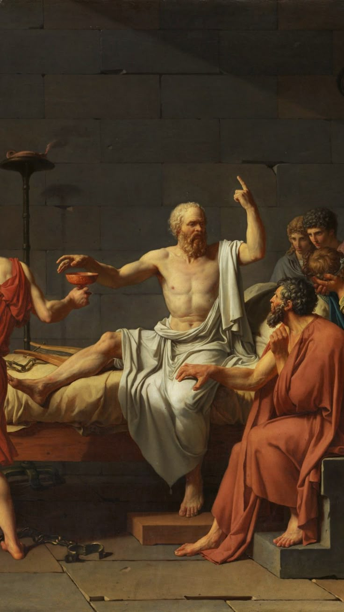
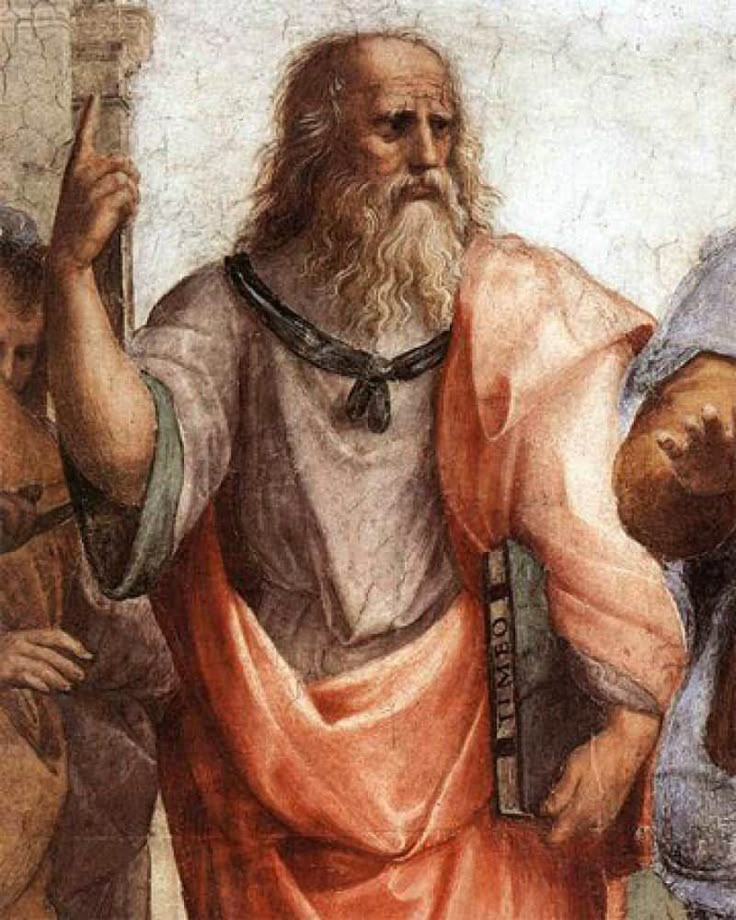
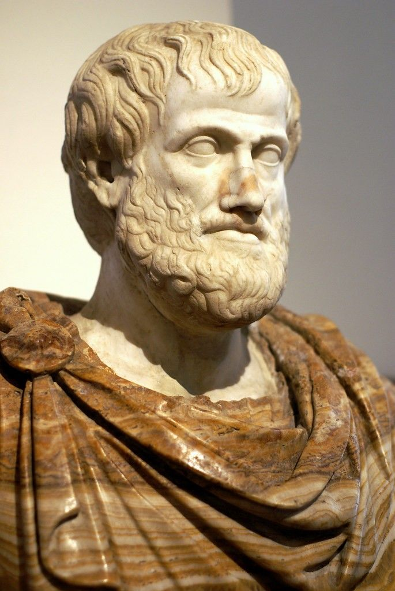

La filosofía antigua surge en la Antigua Grecia alrededor del siglo VI a.C.
Su objetivo principal era explicar el origen del mundo y de la naturaleza
mediante la razón y no mediante mitos.
I. Los filósofos presocráticos
Los presocráticos se centraron en el estudio de la naturaleza.
Buscaban el principio fundamental de todas las cosas, llamado arjé.
Tales de Mileto: el agua como principio de todo
Anaximandro: el ápeiron como origen
Heráclito: el cambio constante
Parménides: el ser como algo inmutable
II. Sócrates
Sócrates cambió el enfoque de la filosofía hacia el ser humano.
Se interesó por la ética, la virtud y el conocimiento.

Sócrates (470-399 a.C.)
Su método, conocido como mayéutica, consistía en hacer preguntas
para que las personas llegaran al conocimiento por sí mismas.
III. Platón
Platón fue discípulo de Sócrates y desarrolló la teoría de las Ideas.
Según Platón, existe un mundo sensible y un mundo inteligible.

El mundo inteligible es el verdadero y está formado por Ideas perfectas.
El mundo sensible es una copia imperfecta de ese mundo ideal.
IV. Aristóteles
Aristóteles fue alumno de Platón, pero se alejó de su pensamiento.
Consideraba que el conocimiento comienza con la experiencia.

Sus aportes abarcan la lógica, la ética, la política, la biología
y la metafísica.
2. Filosofía Medieval
La filosofía medieval se desarrolló entre los siglos V y XV.
Estuvo fuertemente influenciada por la religión, especialmente
el cristianismo.
2.I. San Agustín
San Agustín integró la filosofía platónica con el cristianismo.
Defendía que la verdad se encuentra en Dios.
2.II. Santo Tomás de Aquino
Santo Tomás de Aquino combinó la filosofía de Aristóteles con la teología cristiana.
Propuso que la razón y la fe no se contradicen.
Sus famosas cinco vías intentan demostrar racionalmente la existencia de Dios.
3. Filosofía Moderna
La filosofía moderna surge entre los siglos XVI y XVIII.
Se caracteriza por el surgimiento de la ciencia moderna
y el cuestionamiento de la autoridad religiosa.
3.I. Racionalismo
El racionalismo sostiene que la razón es la principal fuente del conocimiento.
René Descartes
Baruch Spinoza
Gottfried Leibniz
Descartes es conocido por su frase: "Pienso, luego existo".
3.II. Empirismo
El empirismo afirma que el conocimiento proviene de la experiencia.
John Locke
George Berkeley
David Hume
Para Locke, la mente es una tabla rasa al nacer.
4. Filosofía Contemporánea
La filosofía contemporánea se desarrolla desde el siglo XIX
hasta la actualidad.
4.I Idealismo alemán
Immanuel Kant revolucionó la filosofía al analizar los límites
del conocimiento humano.
Para Kant, el conocimiento es el resultado de la interacción
entre la experiencia y la mente.
4.II Existencialismo
El existencialismo se centra en la libertad, la responsabilidad
y el sentido de la existencia.
Søren Kierkegaard
Jean-Paul Sartre
Albert Camus
Sartre afirmaba que el ser humano está condenado a ser libre.
4.III. Filosofía actual
En la actualidad, la filosofía aborda temas como la tecnología,
la inteligencia artificial, la ética aplicada y la globalización.
La filosofía sigue siendo una herramienta fundamental para
reflexionar críticamente sobre el mundo.
Conclusión
La filosofía ha acompañado al ser humano desde sus orígenes.
A través de distintas épocas, ha cambiado su enfoque,
pero siempre ha buscado comprender la realidad y la existencia.
Estudiar filosofía permite desarrollar el pensamiento crítico,
la argumentación y la capacidad de cuestionar el mundo que nos rodea.